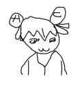
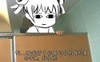
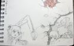
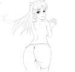

为什么完全不像啊！！！
为什么完全不像啊！！！

╮(╯▽╰)╭
(｀･ω･)能轉貼po主得進化史么
( ´∀`)每天都来励志

無本文
>>No.727388
噗哈哈哈，笑尿了
噗哈哈哈，笑尿了

(￣ｰ￣) 为雅安人民祈福。PO 继续加油吧。。。

我是原PO 为了证明我还在画 素描基础很差 色彩也不会( ´_っ`)
 参考图
参考图
现在刚开始了解到基础的重要 一般每天都会练素描（速写） 色彩还没接触 然后练习人体 画个几年大概能看了 毕竟是业余的
>>No.740539
感觉像在强拆
感觉像在强拆
>>No.748055
沙包共勉，戰人體！！！戰透視！！！！(=ﾟωﾟ)=
沙包共勉，戰人體！！！戰透視！！！！(=ﾟωﾟ)=
>>No.748063
临摹的话
不要想着高还原，要自己思考如何画才美感。。
（你这因为一味想还原照片的姿势，反而画蛇添足般得让人觉得过渡得很不自然生硬。
临摹的话
不要想着高还原，要自己思考如何画才美感。。
（你这因为一味想还原照片的姿势，反而画蛇添足般得让人觉得过渡得很不自然生硬。
>>No.749649
这个道理我也发现了 但是画技不允许我打到那个境界(;´Д`)
这个道理我也发现了 但是画技不允许我打到那个境界(;´Д`)
 今天的涂鸦
今天的涂鸦
>>No.751530
总有一天快到啦！！！
再差一点就可以撸啦
总有一天快到啦！！！
再差一点就可以撸啦
>>No.751516
怎么会，我看到你的臀部画的不错
败笔就在手与脸的处理了，看得出为了还原原画你还特地下功夫了，到了几乎一样的曲线走向，可是临摹就是临摹，哪怕曲线对了，但细微的比例差距终究会留下败笔，所以才会原图蛮正常，但你的临摹就显得有点生硬跟崩坏。。
其实你应该相信自己直觉尽量改得更贴近二次元，例如手臂，我就不信你画的时候没想过画的纤细修长些会效果更好之类的想法
怎么会，我看到你的臀部画的不错
败笔就在手与脸的处理了，看得出为了还原原画你还特地下功夫了，到了几乎一样的曲线走向，可是临摹就是临摹，哪怕曲线对了，但细微的比例差距终究会留下败笔，所以才会原图蛮正常，但你的临摹就显得有点生硬跟崩坏。。
其实你应该相信自己直觉尽量改得更贴近二次元，例如手臂，我就不信你画的时候没想过画的纤细修长些会效果更好之类的想法